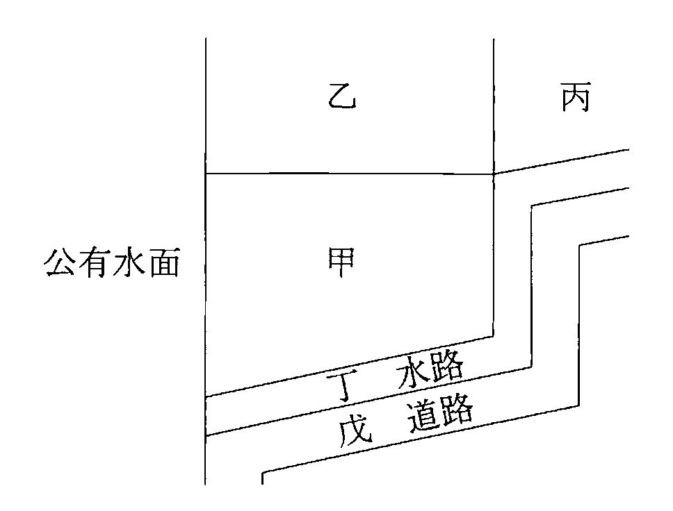
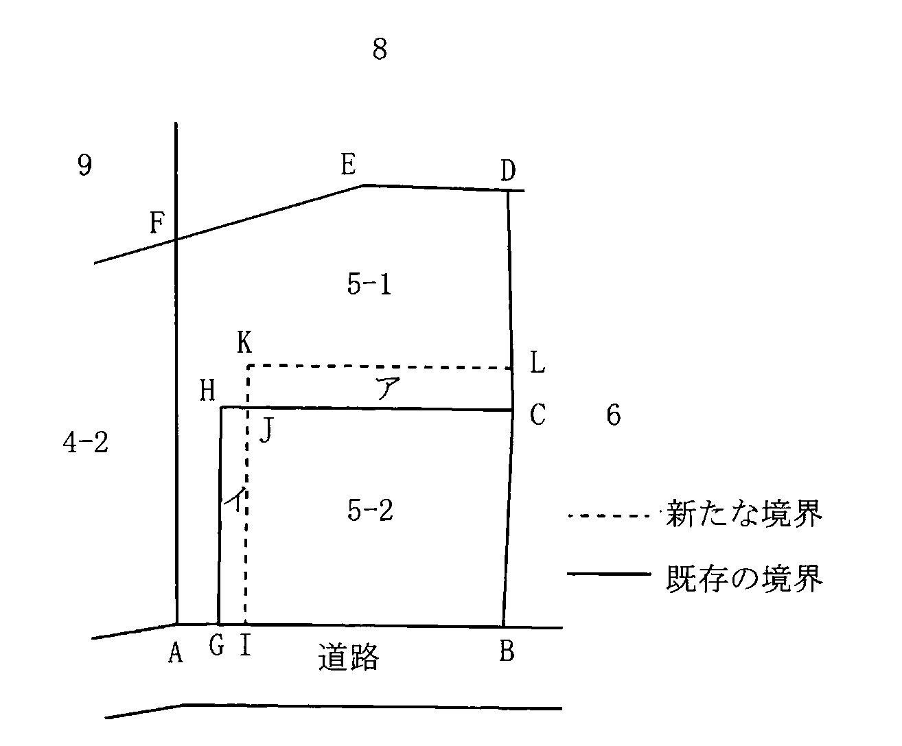
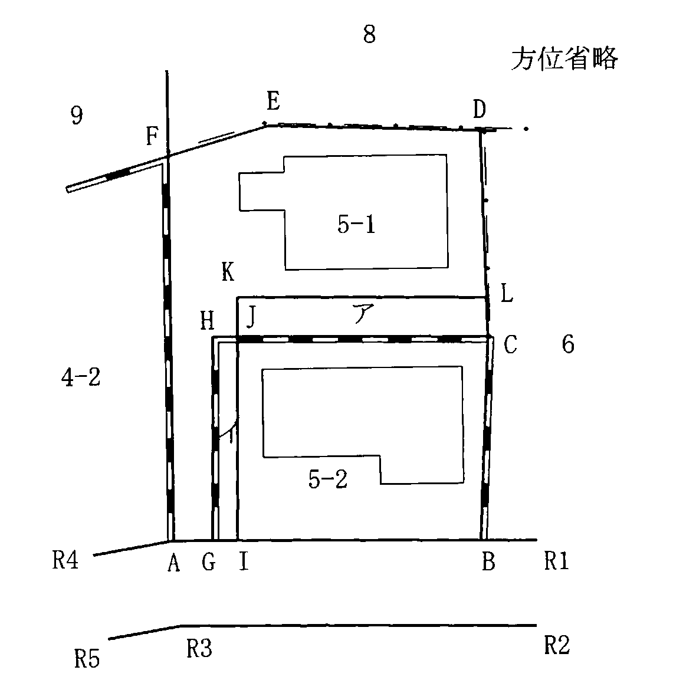
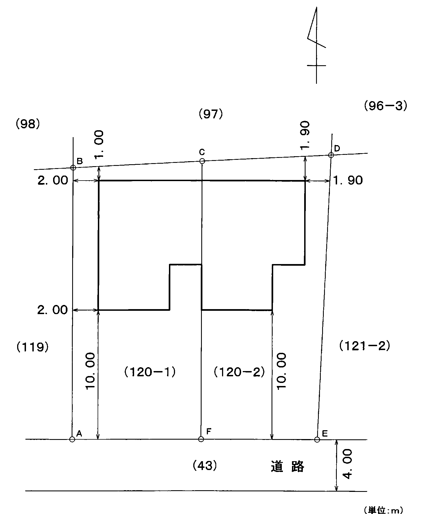
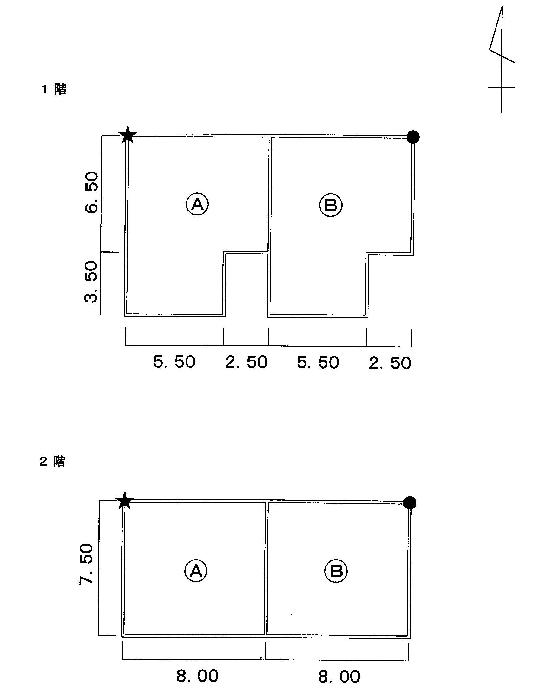
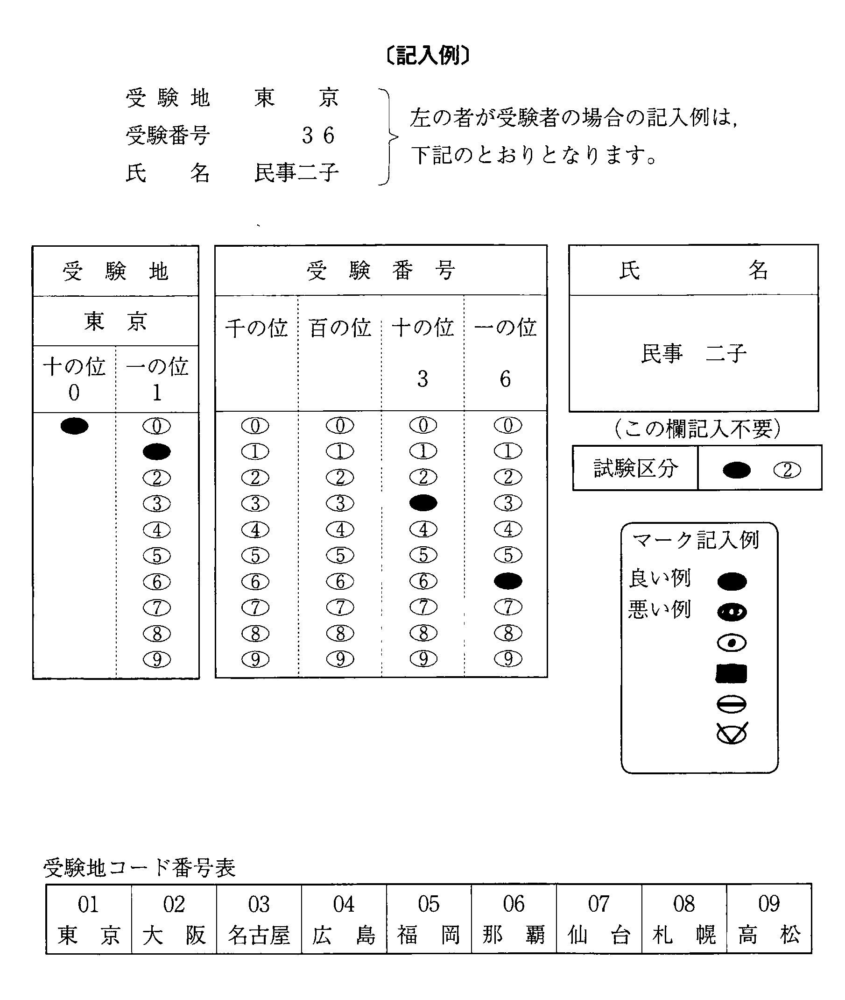

注意（問題冊子の表紙）

多肢択一式（第1問〜第20問）
第1問
任意代理に関する次のアからオまでの記述のうち，誤っているものの組合せは，後記1から5までのうちどれか。
- ア代理人が本人のためにすることを示さないでした意思表示は，相手方が，代理人が本人のためにすることを知っていたときは，本人に対して直接にその効力を生ずる。
- イ意思表示の効力が，ある事情を知っていたことによって影響を受けるべき場合には，その事実の有無は，代理人について決する。
- ウ未成年者を代理人に選任することは，できない。
- エ代理人は，本人の指名に従って選任した復代理人が不適任又は不誠実であることを知りながら，その旨を本人に通知し又は復代理人を解任することを怠ったときは，復代理人の選任及び監督について，本人に対してその責任を負う。
- オ同一の法律行為については，本人があらかじめ許諾した場合であっても，当事者双方の代理人となることはできない。
1 アイ2 アウ3 イエ4 ウオ5 エオ
第2問
法律行為に付された条件に関する次のアからオまでの記述のうち，判例の趣旨に照らし正しいものの組合せは，後記1から5までのうちどれか。
- ア農地の売買契約について，「農業委員会の許可を受けなければ，農地の所有権は移転しない。」旨の条項を設けた場合において，売主による故意の妨害行為があったために農業委員会の許可を受けることができなかったときは，買主は，農業委員会の許可を受けたものとみなして，当該農地の所有権を取得することができる。
- イ甲土地の買主が甲土地の売買代金の支払を遅滞している場合において，売主がした「2週間以内に甲土地の売買代金を支払わないときは，売買契約を解除する。」旨の意思表示は，単独行為に条件を付すものであるから，無効となる。
- ウ「Aが結婚したら，Bは，Aに対し，B所有の甲土地を贈与する。」旨の契約をA及びBが締結した場合には，当事者は，甲土地について，条件付所有権の移転の仮登記をすることができる。
- エ「Aが大学に合格したら，Bは，Aに対し，B所有の乙建物を贈与する。」旨の契約をA及びBが締結した場合において，Cの放火により乙建物が滅失したときは，Aは，大学に合格する前であっても，Cに対し，乙建物の価値相当額の損害の賠償を請求することができる。
- オ「Aが大学で進級することができなかったら，Bは，Aに対して支払ってきた奨学金をその後は支払わない。」旨の契約をA及びBが締結した場合において，Aが大学で進級することができなかったときは，Bは，Aが大学で進級することができなかったことを知らなくても，Aに対して奨学金を支払う義務を免れる。
1 アイ2 アオ3 イエ4 ウエ5 ウオ
第3問
甲土地がAからBへ，BからCへと順次譲渡された場合における次のアからオまでの記述のうち，判例の趣旨に照らし正しいものの組合せは，後記1から5までのうちどれか。
- ア甲土地の所有権の登記名義人がいまだAのままである場合であっても，Cは，Aに対し，甲土地の所有権を主張することができる。
- イ甲土地の所有権の登記名義人がいまだAのままである場合には，Cは，Bの相続人であるDに対し，甲土地の所有権を主張することができない。
- ウ甲土地の所有権の登記名義人がいまだAのままである場合において，A，B及びCの三者間で，AからCへの直接登記名義を移転する旨の合意をしたときは，Bの債権者であるEは，自己の債権を保全するため，Bに代位して，Aに対し，Bへの所有権の移転の登記手続を請求することができない。
- エ甲土地の所有権の登記名義人がいまだAのままである場合には，Cは，Bに対する登記請求権を保全するためであっても，Bに代位して，Aに対し，Bへの所有権の移転の登記手続を請求することができない。
- オAとBとの間の売買契約に基づいてAからBへ甲土地の所有権の移転の登記がされた場合において，AがBによる詐欺を理由としてその売買契約に係る意思表示を取り消した後，Bへの所有権の移転の登記を抹消する前に，BからCへの甲土地の譲渡が行われていたときは，Cは，自己への所有権の移転の登記をしなければ，Aに対し，甲土地の所有権を主張することができない。
1 アウ2 アオ3 イウ4 イエ5 エオ
第4問
申請情報に関する次のアからオまでの記述のうち，正しいものの組合せは，後記1から5までのうちどれか。
- ア土地の表題登記の申請をするときは，その土地の地番を申請情報の内容としなければならない。
- イ地役権の登記がある承役地の分筆の登記を申請する場合において，地役権設定の範囲が分筆後の土地の一部であるときは，分筆前の土地の地役権図面の番号を申請情報の内容とすることを要しない。
- ウ所有権の登記がある土地の合筆の登記を申請する場合において，登記識別情報を失念したときは，その旨を登記識別情報を提供することができない理由として申請情報の内容としなければならない。
- エ法人が土地の表題登記の申請をしたときは，申請情報の内容である当該法人の代表者の氏名が当該土地の登記記録の表題部に記録される。
- オ分筆の登記の申請をする場合には，分筆後の土地の地目及び地積を申請情報の内容としなければならないが，当該土地の所在する市，区，郡，町，村及び字については，申請情報の内容とすることを要しない。
1 アイ2 アオ3 イウ4 ウエ5 エオ
第5問
地図に関する次のアからオまでの記述のうち，誤っているものの組合せは，後記1から5までのうちどれか。
- ア地図には，縮尺係数が記録される。
- イ電磁的記録に記録する地図には，各筆界点の座標値が記録される。
- ウ市街地地域，村落・農耕地域及び山林・原野地域の地域区分により，地図の縮尺が定められている。
- エ地図に表示された土地の区画又は地番に誤りがあるときは，当該土地の表題部所有者若しくは所有権の登記名義人又はこれらの相続人その他の一般承継人は，その訂正の申出をすることができる。
- オ地図を作成するための一筆地測量及び地積測定における誤差の限度は，市街地地域については，国土調査法施行令別表第四に掲げる精度区分甲三までとされている。
1 アエ2 アオ3 イウ4 イエ5 ウオ
第6問
地目の変更の登記に関する次のアからオまでの記述のうち，正しいものの組合せは，後記1から5までのうちどれか。
- ア地目を畑から宅地に変更する登記の申請情報に記録する登記原因の日付は，農地法所定の許可があった日ではなく，その現況に変更が生じた日である。
- イ地表部分の現況が特定の目的に供されていない土地であっても，地下に鉄道の線路が敷設された場合には，地目を鉄道用地とする地目の変更の登記を申請しなければならない。
- ウ河川区域内の土地である旨の登記のある土地の地目に変更があった場合でも，河川区域内の土地である旨の登記の抹消をしなければ，地目の変更の登記を申請することはできない。
- エ地目が保安林として登記されている土地が崩壊して荒地となり，かん木類が生える状態になった場合でも，保安林としての指定が解除されない限り，地目を原野とする地目の変更の登記を申請することはできない。
- オ敷地権である旨の登記がされている土地については，地目を宅地以外の地目に変更する地目の変更の登記を申請することはできない。
1 アエ2 アオ3 イウ4 イオ5 ウエ
第7問
分筆の登記に関する次のアからオまでの記述のうち，正しいものの組合せは，後記1から5までのうちどれか。
- ア承役地についてする地役権の登記がある甲土地から乙土地を分筆する分筆の登記を申請する場合において，地役権設定の範囲が分筆後の甲土地の一部のみとなるときは，既に地役権図面が備えられているとしても，地役権図面を申請情報と併せて登記所に提供しなければならない。
- イ承役地についてする地役権の登記がある甲土地から乙土地を分筆する分筆の登記を申請する場合において，地役権設定の範囲が分筆後の甲土地の全部のみとなるときは，甲土地の登記記録については地役権の範囲を甲土地全部に変更する旨を記録し，乙土地の登記記録については地役権の登記を甲土地の登記記録から転写した後，当該地役権の登記が抹消される。
- ウ要役地についてする地役権の登記がある甲土地から乙土地を分筆し，乙土地について地役権を消滅させる登記を申請する場合において，分筆前の甲土地を目的とする抵当権の登記があるときは，分筆後の乙土地について地役権を消滅させることを証する地役権者が作成した情報のほか，抵当権者が当該地役権を消滅させることを承諾したことを証する情報も，申請情報と併せて登記所に提供しなければならない。
- エA及びBが所有権の登記名義人である甲土地から乙土地を分筆する分筆の登記を申請する場合において，分筆後の甲土地をAが単独で所有し，乙土地をBが単独で所有することを証する情報を提供したときは，分筆後の甲土地にあってはAが単独所有者として登記され，乙土地にあってはBが単独所有者として登記される。
- オ地上権を敷地権とする敷地権である旨の登記がされた甲土地から乙土地を分筆する分筆の登記の申請は，分筆前の甲土地を敷地権の目的である土地とする区分建物の所有権の登記名義人が全員でしなければならない。
1 アウ2 アエ3 イエ4 イオ5 ウオ
第8問
合筆の登記に関する次のアからオまでの記述のうち，正しいものの組合せは，後記1から5までのうちどれか。
- ア甲土地にはA及びBを所有権の登記名義人とする所有権の登記があり，乙土地にはB及びCを所有権の登記名義人とする所有権の登記がある場合において，甲土地のA及びBの持分がそれぞれ2分の1であり，乙土地のB及びCの持分もそれぞれ2分の1であるときは，乙土地についてAがCの持分を取得したことを証する情報を提供して，甲土地を乙土地に合筆する合筆の登記を申請することができる。
- イ甲土地及び乙土地の登記記録の地目がいずれも宅地である場合であっても，甲土地と乙土地の地番区域が異なるときは，甲土地を乙土地に合筆する合筆の登記を申請することはできない。
- ウ甲土地に承役地についてする地役権の登記がある場合には，甲土地を他の土地に合筆する合筆の登記を申請することはできない。
- エ甲土地にAを表題部所有者とする表題登記のみがされている場合において，乙土地にAを所有権の登記名義人とする所有権の登記がされたときは，甲土地を乙土地に合筆する合筆の登記を申請することができる。
- オ甲土地に順位1番及び順位2番の抵当権の登記があり，乙土地に順位1番の抵当権の登記がある場合には，甲土地の順位2番及び乙土地の順位1番の抵当権の登記の登記の目的，申請の受付の年月日及び受付番号並びに登記原因及びその日付が同一であっても，甲土地を乙土地に合筆する合筆の登記の申請をすることはできない。
1 アウ2 アエ3 イエ4 イオ5 ウオ
第9問
地積測量図の訂正の申出に関する次のアからオまでの記述のうち，正しいものの組合せは，後記1から5までのうちどれか。
- ア土地の所有権の登記名義人の相続人が数人ある場合には，当該土地の地積測量図に誤りがあるときであっても，相続人の一人が地積測量図の訂正の申出をすることはできない。
- イ土地の地積測量図の求積方法に誤りがあり，当該土地の登記記録の地積と正しい地積とが異なる場合には，地積測量図の訂正の申出をすることができる。
- ウ土地の所有権の登記名義人の住所が変更され，登記記録の住所と異なる場合には，当該所有権の登記名義人は，地積測量図の訂正の申出に係る申出情報と併せて当該所有権の登記名義人の住所に変更があったことを証する情報を提供して，当該申出をすることができる。
- エ委任による代理人によって書面による地積測量図の訂正の申出をする場合には，申出情報を記載した書面に添付した当該代理人の権限を証する情報を記載した書面には，その書面に記名押印した申出人の印鑑証明書を添付しなければならない。
- オ地積測量図に記録された地番の誤りを訂正する地積測量図の訂正の申出をする場合には，登記所に備え付けてある資料により訂正する事由が明らかであるときであっても，訂正後の地積測量図を提供しなければならない。
1 アイ2 アオ3 イエ4 ウエ5 ウオ
第10問
次の〔図〕に示されている各土地の筆界特定の申請に関する次のアからオまでの記述のうち，正しいものの組合せは，後記1から5までのうちどれか。
- ア甲土地と乙土地との筆界について既に筆界特定登記官による筆界特定がされている場合においては，当該筆界特定の資料となった文書が偽造されたものであったときでも，甲土地の所有権の登記名義人であるAは，甲土地及び乙土地を対象土地として筆界特定の申請をすることはできない。
- イ甲土地の所有権の登記名義人であるAから甲土地の公有水面側の一部を譲り受けたBは，甲土地及び丙土地を対象土地として筆界特定の申請をすることはできない。
- ウ甲土地について登記された抵当権の登記名義人であるCは，甲土地及び乙土地を対象土地として筆界特定の申請をすることができる。
- エ無地番の丁水路を所有するD市は，丁水路及び隣接するE市が所有する無地番の戊道路を対象土地として筆界特定の申請をすることができる。
- オ甲土地を所有するAが，隣接する乙土地を所有するFに対し，Aが所有する範囲について所有権の確認の訴えを提起し，その判決が確定した場合であっても，Aは，甲土地及び乙土地を対象土地として筆界特定の申請をすることができる。
〔図〕

1 アエ2 アオ3 イウ4 イオ5 ウエ
第11問
登記記録等の保存期間に関する次のアからオまでの記述のうち，正しいものの組合せは，後記1から5までのうちどれか。
- ア筆界特定書に記載され，又は記録された情報は，筆界特定をした日から50年間保存される。
- イ申請又は申出の添付情報を記載した書面として提出された地積測量図が電磁的記録に記録して保存された場合には，当該地積測量図は，電磁的記録に記録して保存された日から10年間保存される。
- ウ所有権の登記がない土地の表題部の持分の更正の登記の申請情報及びその添付情報は，受付の日から30年間保存される。
- エ地図が備え付けられ，従前の地図に準ずる図面が閉鎖された場合には，当該地図に準ずる図面は，閉鎖された日から50年間保存される。
- オ甲土地を乙土地に合筆した場合には，甲土地の登記記録は，閉鎖された日から50年間保存される。
1 アエ2 アオ3 イウ4 イエ5 ウオ
第12問
建物の表示に関する登記の添付情報に関する次のアからオまでの記述のうち，正しいものの組合せは，後記1から5までのうちどれか。
- ア共用部分である旨の登記に錯誤があったことにより表題部の更正の登記を申請する場合には，添付情報として，錯誤があったことを証する情報を提供すれば足り，当該建物の所有者を証する情報を提供することを要しない。
- イ区分建物である建物を新築した場合において，その所有者について相続があったことにより，相続人が被相続人を表題部所有者とする当該建物の表題登記を申請するときは，添付情報として，相続があったことを証する市町村長が職務上作成した情報（当該情報がない場合にあっては，これに代わるべき情報）を提供しなければならない。
- ウ共用部分である旨の登記を申請する場合において，抵当証券が発行されていない抵当権の登記があるときは，添付情報として，当該抵当権の登記名義人の承諾を証する当該登記名義人が作成した情報又は当該登記名義人に対抗することができる裁判があったことを証する情報を提供しなければならない。
- エ共用部分である旨を定めた規約を廃止した場合において，建物の表題登記を申請するときは，添付情報として，表題部所有者となる者が所有権を有することを証する情報を提供することを要しない。
- オ敷地権の発生を原因とする建物の表題部の変更の登記を申請する場合には，敷地権の目的である土地が当該建物を管轄する登記所の管轄区域内にあるときであっても，添付情報として，当該土地の登記事項証明書を提供しなければならない。
1 アウ2 アオ3 イウ4 イエ5 エオ
第13問
建物の表示に関する登記に関する次のアからオまでの記述のうち，正しいものの組合せは，後記1から5までのうちどれか。
- ア登記された建物の床面積に誤りがあることが明らかになった場合には，当該建物の所有権の登記名義人は，誤りがあったことを知った日から1か月以内に，当該建物の表題部の更正の登記を申請しなければならない。
- イ既に事務所としての表題登記がある建物の用途をAが改築工事により居宅に変更した後にBが当該建物の所有権をAから取得した場合には，Bは，当該改築工事が完了した日から1か月以内に，当該建物の表題部の変更の登記を申請しなければならない。
- ウ共用部分である旨の登記がある建物について共用部分である旨を定めた規約を廃止した場合には，当該建物の所有者は，当該規約の廃止の日から1か月以内に，当該建物の表題登記を申請しなければならない。
- エ表題登記がある建物の所在する行政区画の名称に変更があった場合には，当該建物の表題部所有者は，行政区画の名称に変更があった日から1か月以内に，当該建物の表題部の変更の登記を申請しなければならない。
- オAが表題部所有者である甲建物とBが所有者である表題登記がない乙建物が改築工事により1個の建物となった場合には，A又はBは，甲建物と乙建物が1個の建物となった日から1か月以内に，合体後の建物についての建物の表題登記及び合体前の建物についての建物の表題部の登記の抹消を申請しなければならない。
1 アエ2 アオ3 イウ4 イエ5 ウオ
第14問
建物の分割の登記等に関する次のアからオまでの記述のうち，正しいものの組合せは，後記1から5までのうちどれか。
- ア1個の建物として登記されているA所有の居宅及び車庫のうち附属建物である車庫のみをBが買い受けたものの，Aが建物の分割の登記を申請しない場合には，Bは，所有権の移転の登記をする前提として，Aに代位して建物の分割の登記を申請することができる。
- イ甲建物の附属建物として登記されている2棟のうち，1棟を主である建物にし，残りの1棟をその附属建物とする場合には，甲建物から2棟の附属建物を乙建物と丙建物にそれぞれ分割する建物の分割の登記をした後に，丙建物を乙建物の附属建物とする建物の合併の登記を申請しなければならない。
- ウ抵当権の登記がある建物について建物の分割の登記を申請する場合において，分割後の全ての建物について抵当権を消滅させることをその抵当権者が承諾したことを証する情報を提供したときは，全ての建物について当該抵当権が消滅した旨を登記することができる。
- エ主である建物が甲登記所の管轄区域内にあり，その附属建物が乙登記所の管轄区域内にある建物が1個の建物として登記されている場合には，この建物を2個の建物に分割する建物の分割の登記は，甲登記所と乙登記所のいずれの登記所に対しても申請することができる。
- オ甲建物からその附属建物を分割して乙建物とする建物の分割の登記をする場合において，分割前の甲建物について，現に効力を有する所有権の登記がされた後，当該分割に係る附属建物の新築による当該分割前の甲建物の表題部の登記事項に関する変更の登記がされていたときは，乙建物の登記記録に分割による所有権の登記をする旨が記録される。
1 アウ2 アオ3 イウ4 イエ5 エオ
第15問
建物の個数に関する次のアからオまでの記述のうち，正しいものの組合せは，後記1から5までのうちどれか。
- ア近接して建築された数棟の建物は，効用上一体として利用される状態になくとも，1個の建物として登記することができる。
- イ区分建物の1棟の建物の内部にある階段室やエレベーター室等，建物の構造上区分所有者の全員の共用に供されるべき建物の部分は，各別に1個の建物として登記することはできない。
- ウ建物の個数は，建物の物理的現況に変更がない場合であっても，表題部所有者又は所有権の登記名義人の登記の申請により，増加し，又は減少することがある。
- エ登記記録は，区分建物については1棟の建物ごとに，区分建物でない建物については1個の建物ごとに作成される。
- オ1棟の建物に構造上区分された数個の部分があり，独立して住居としての用途に供することができるものと倉庫としての用途に供することができるものとがある場合において，これらの2個の部分が隣接していないときは，その所有者が同一であっても，これらを1個の建物として登記することはできない。
1 アウ2 アオ3 イウ4 イエ5 エオ
第16問
建物の認定に関する次のアからオまでの記述のうち，正しいものの組合せは，後記1から5までのうちどれか。
- ア海底から海面上まで設置した脚柱によって支えられた永久的な構築物である桟橋の上に建造した家屋は，土地に直接付着していないため，建物と認定することはできない。
- イ主要な用途が電波塔である鉄塔であっても，鉄塔の下部に建物があり，その建物に設けられたエレベーターと階段によって，当該建物と鉄塔上部の展望台とが連絡している場合には，当該建物と当該展望台とを一体として建物と認定することができる。
- ウ屋根ふき材が波形硬質塩化ビニールである建造物は，他の部分が建物として認定することができる要件を備えていたとしても，建物と認定することはできない。
- エガード下を利用して築造した倉庫は，建物と認定することができる。
- オアーケード付街路（公衆用道路上に屋根覆いを施した部分）は，建物と認定することができる。
1 アエ2 アオ3 イウ4 イエ5 ウオ
第17問
建物図面又は各階平面図に関する次のアからオまでの記述のうち，誤っているものの組合せは，後記1から5までのうちどれか。
- ア建物図面及び各階平面図は，1個の建物（附属建物があるときは，主である建物と附属建物とを合わせて1個の建物とする。）ごとに作成しなければならない。
- イ建物図面及び各階平面図を書面で作成する場合には，0.3ミリメートル以下の細線により，図形を鮮明に表示しなければならない。
- ウ建物図面の作成に当たり，建物がその図面上において極めて僅少となり，その形状を図示し難いときは，その位置のみを記入し，その用紙の余白の適宜の箇所に適宜の縮尺により拡大表示し，その位置，形状及び縮尺を明らかにすることができる。
- エ各階平面図は，250分の1の縮尺により作成しなければならないが，建物の状況その他の事情により当該縮尺によることが適当でないときは，500分の1の縮尺により作成しなければならない。
- オ附属建物の新築による建物の表題部の変更の登記を申請する際に提供すべき建物図面は，新築された附属建物のみでなく，主である建物も含めて記録しなければならない。
1 アエ2 アオ3 イウ4 イエ5 ウオ
第18問
最初に建物の専有部分の全部を所有する者が区分建物の表題登記の申請をする場合において，規約証明情報として提供の対象となる公正証書により設定することができる規約でないものは，次の1から5までのうちどれか。
- 1法定共用部分でない建物の部分及び附属の建物を共用部分とすること。
- 2区分所有者が建物及び建物が所在する土地と一体として管理又は使用をする庭，通路その他の土地を建物の敷地とすること。
- 3法定共用部分の持分を専有部分の床面積の割合と異なる割合によるものとすること。
- 4各専有部分に係る敷地利用権の割合を各専有部分の床面積の割合と異なる割合によるものとすること。
- 5専有部分とその専有部分に係る敷地利用権とを分離して処分することができるようにすること。
第19問
登録免許税に関する次のアからオまでの記述のうち，正しいものの組合せは，後記1から5までのうちどれか。
- ア1筆の土地を2筆に分筆する分筆の登記をした場合において，錯誤を原因とする分筆の登記の抹消を申請するときに納付すべき登録免許税の額は，1,000円となる。
- イ地上権が敷地権である旨の登記がある土地を分筆する分筆の登記を申請する場合には，登録免許税は課されない。
- ウ所有権の登記名義人を異にする二以上の建物が合体して1個の建物となった場合にする登記の申請において納付すべき登録免許税の額は，1,000円となる。
- エ所有権の登記がある甲土地の一部を分筆してこれを所有権の登記がある乙土地に合筆する合筆の登記を一の申請情報によって申請する場合に納付すべき登録免許税の額は，2,000円となる。
- オ私人が所有権の登記名義人である土地について，地方公共団体が代位による分筆の登記を嘱託する場合には，登録免許税は課されない。
1 アウ2 アオ3 イウ4 イエ5 エオ
第20問
土地家屋調査士会に関する次のアからオまでの記述のうち，誤っているものの組合せは，後記1から5までのうちどれか。
- ア土地家屋調査士会は，入会金に関する規定を会則に記載しなければならず，入会金に関する会則の規定を定め，又は変更するには，法務大臣の認可を受けなければならない。
- イ土地家屋調査士会は，所属の会員が受任する業務の報酬額を定めなければならず，会員は，その報酬額の定めに従わなければならない。
- ウ土地家屋調査士会は，所属の会員が土地家屋調査士法に違反するおそれがあると認めるときは，会則の定めるところにより，会員に対し，注意を促し，又は必要な措置を講ずべきことを勧告することができる。
- エ日本土地家屋調査士連合会は，土地家屋調査士となる資格を有している者から土地家屋調査士名簿への登録を求められた場合には，その者が土地家屋調査士会への入会の手続を執らないことを理由として，登録を拒否してはならない。
- オ土地家屋調査士会は，所属する会員が土地家屋調査士法に違反すると考えるときは，その旨を当該土地家屋調査士会の事務所の所在地を管轄する法務局又は地方法務局の長に報告しなければならない。※
1 アイ2 アウ3 イエ4 ウオ5 エオ
※ オ 令和元年の土地家屋調査士法改正（令和2年8月1日施行）で調査士に対する監督が法務大臣に一元化され，報告先は「法務局又は地方法務局の長」から「法務大臣」に改められた。
第21問（土地）
第21問土地家屋調査士法務太郎は，山川一郎から，平成23年12月に分筆の登記の申請手続並びにこれに必要な調査及び測量の依頼を受けたが，平成24年5月26日，別紙1のとおり事情を聴取し，再び，表示に関する登記の申請手続並びにこれに必要な調査及び測量の依頼を受けた。
別紙2は，平成24年6月2日に山川一郎及び海川二郎が取り交わした覚書であるが，この際，土地家屋調査士法務太郎も，その場に同席し，両名に対して今後の登記手続に必要な書類等を説明し，その了承を得た。
土地家屋調査士法務太郎が調査及び測量をした結果は，別紙3から5までのとおりである。
以上に基づき，土地家屋調査士法務太郎が行う表示に関する登記の申請手続並びに必要な調査及び測量に関する次の(1)から(4)までの問いに答えなさい。
(1)土地家屋調査士法務太郎が地積測量図を作成した際に算出したK点及びL点の座標値を求め，別紙第21問答案用紙（その1）第1欄に記載しなさい。
(2)別紙2の覚書3(1)の登記のうち，5番1の土地について申請すべき登記の申請書に添付する地積測量図（縮尺1：250）を，別紙第21問答案用紙（その2）を用いて，完成させなさい。ただし，当該申請は，5番2の土地についての登記の申請より先に行うものとし，分割地アの地番は5番3，分割地イの地番は5番4とするものとする。
(3)別紙2の覚書3(3)の登記のうち，5番2の土地について申請すべき登記の申請書を，別紙第21問答案用紙（その1）第2欄の登記申請書の空欄を埋めて，完成させなさい。
(4)土地家屋調査士法務太郎は，山川一郎及び海川二郎が覚書を作成する際，お互いの土地の地積を更正する方法による登記の手続をすることができないかどうかの相談を受けた。この場合において，土地家屋調査士法務太郎として回答すべき結論及びその理由を別紙第21問答案用紙（その1）第3欄に記載しなさい。
なお，理由については，「G点，H点及びC点を順次直線で結んだ線」及び「I点，K点及びL点を順次直線で結んだ線」という語句を用いて，簡潔に記載しなさい。
(注)1各点の座標値は，計算結果の小数点以下第3位を四捨五入し，小数点以下第2位までとすること。
2訂正，加入又は削除をしたときは，押印や字数を記載することを要しない。
3地積測量図には，座標値から求めた筆界点間の辺長について，計算結果の小数点以下第3位を四捨五入した上，小数点以下第2位までを記載すること。また，基本三角点等の表示は，申請地に最も近い2点について，図面上にその位置及
び名称を明示し，用紙の適宜の場所に，その2点の名称及び座標値を記載すること。
なお，各筆界点の座標値，平面直角座標系の番号又は記号，測量の年月日並びに地積及びその求積方法の記載は，省略して差し支えない。
4必要な登記の申請は，書面を提出する方法によって行うものとする。
5三角関数真数表
| sin | cos | tan |
|---|
| 34° 09′ 51″ | 0.5615660038 | 0.8274319449 | 0.678685428 |
| 43° 47′ 44″ | 0.6920871847 | 0.7218139156 | 0.958816628 |
| 45° 42′ 53″ | 0.7158721688 | 0.6982313642 | 1.025264984 |
| 46° 33′ 28″ | 0.7260681474 | 0.6876227493 | 1.055910597 |
| 124° 09′ 51″ | 0.8274319449 | −0.5615660038 | −1.473436674 |
| 133° 47′ 48″ | 0.7218004941 | −0.6921011824 | −1.042911806 |
| 136° 33′ 28″ | 0.6876227493 | −0.7260681474 | −0.947049876 |
（別紙1）
【土地家屋調査士法務太郎の聴取記録】
1A市B町三丁目3番8号に住所を有する山川一郎は，平成23年12月，その所有に係るD市E町六丁目5番の土地を5番1及び5番2の土地に分筆した。
25番2の土地は，A市C町六丁目4番9号に住所を有する海川二郎に対して賃貸していた範囲の土地であったが，海川二郎の要望により，これを海川二郎に売却し，全ての登記手続を平成24年1月に完了させていた。
3山川一郎は，残った5番1の土地も売却することを考え，A市C町一丁目1番2号所在の株式会社大山不動産に相談に行ったところ，現地の形状が道路に接する専用通路部分の幅が狭く，現在の入口の幅約2 mを約3 mにしないと，なかなか買手が見付からないとの回答を受けた。
4山川一郎は，海川二郎に相談したところ，海川二郎も家の建替えを考えていたとのことであり，その後，別紙2の覚書の内容のとおりとすることで，話がまとまった。
（別紙2）
覚 書
山川一郎（以下「甲」という。）と海川二郎（以下「乙」という。）は，土地の交換に関し，協議の結果，次のとおり合意した。
（当事者の土地）
1．甲は，D市E町六丁目5番1の土地（以下「5番1の土地」という。）を所有し，乙は，同所5番2の土地（以下「5番2の土地」という。）を所有している。
（筆界の確認）
2．甲及び乙は，5番1の土地と5番2の土地との筆界が平成23年12月1日作成の地積測量図のとおりであることを相互に確認する。
（登記の順序）
3．登記の順序は，次によることとする。
(1)土地の分割
甲は，5番1の土地のうち別紙図面に示すアの部分を分割する登記を行い，乙は，5番2の土地のうちイの部分を分割する登記を行う。
(2)所有権移転
(1)により分割したイの部分（以下「分割地イ」という。）は甲へ，アの部分（以下「分割地ア」という。）は乙へ，交換を原因とする所有権の移転の登記を行う。
(3)土地の合併
分割地アを除く5番1の土地と分割地イを，分割地イを除く5番2の土地と分割地アを，それぞれ一筆の土地にする登記を行う。
（相互協力）
4．甲及び乙は，本件の実行に当たっては，全面的に協力しなければならない。
（費用負担）
5．本件に係る次の費用は，甲の負担とする。
(1)土地測量費用
(2)土地の分割の登記に係る費用
(3)所有権の移転の登記に係る費用
(4)土地の合併の登記に係る費用
(5)その他本件に係る費用
以上のとおり協議が成立し，合意した事実を証するため，本覚書を作成し，相互にこれを保有する。
別紙図面

（注）
1別紙図面は，地図に準ずる図面に山川一郎が符号等を記入したものである。
2I点は，A点とB点を結ぶ直線上の点であり，A点から3.02 mの位置となる点とする。
3J点は，H点とC点を結ぶ直線上の点である。
4K点は，J点とI点を結ぶ直線の延長線上の点であり，J点から0.65 mの位置となる点とする。
5K点とI点を結ぶ直線とH点とC点を結ぶ直線は，直角に交差する。
6L点は，C点とD点を結ぶ直線上の点であり，分割地アの面積は，分割地イの面積の1.087倍（面積の比較は，小数点以下第4位までの値で行った。）となる。
7別紙図面記載のA点からH点までの各点は，既存の地積測量図に記載されたA点からH点までの各点と符合する。
（別紙3）
【土地家屋調査士法務太郎が調査した結果の概要】
1基礎情報
(1)申請対象土地の登記記録
（表題部）
| 所 在 | D市E町六丁目 |
|---|
| 地 番 | 5番1 |
|---|
| 地 目 | 宅地 |
|---|
| 地 積 | （略） |
|---|
（権利部）
| 甲区 | 順位2番 所有権移転 A市B町三丁目3番8号 山川一郎 |
|---|
| 乙区 | なし |
|---|
（表題部）
| 所 在 | D市E町六丁目 |
|---|
| 地 番 | 5番2 |
|---|
| 地 目 | 宅地 |
|---|
| 地 積 | （略） |
|---|
（権利部）
| 甲区 | 順位2番 所有権移転 A市C町六丁目4番9号 海川二郎 |
|---|
| 乙区 | なし |
|---|
(2)隣接関係等
（略）
(3)登記識別情報
5番1の土地については，平成20年の相続による所有権の移転の登記の際に，分筆前の5番の土地についての登記識別情報が通知されており，5番2の土地については，売買による所有権の移転の登記の際に，登記識別情報が通知されている。
2資料に関する調査
(1)登記所備付資料
地図に準ずる図面，地積測量図
(2)その他の資料
D市道路境界確定図（昭和50年確認，平成23年基準点整備に伴い再製）
D市4級基準点成果（平成23年作成）
(3)官公署の許可等
なし
3対象となる土地の特定のための現地調査
土地の区画形状の確認
地図に準ずる図面，地積測量図にて確認
4対象となる土地に関する筆界の確認
(1)立会いの状況
| 立会年月日 | 平成23年11月20日 |
|---|
| 確認年月日 | 平成23年11月25日 |
|---|
(2)筆界の状況
平成23年12月9日の分筆の登記の申請の際に確認した筆界の状況と変化がないことを確認した。
5地積の測量方法に関する情報
(1)基本三角点等からの測量
D市道路管理課管理の4級基準点（公共座標）が既に配置されている。
(2)細部測量
4級基準点から放射トラバースにて観測
使用機器 TS
観測者 土地家屋調査士法務太郎
| 境界点観測年月日 | 平成23年11月7日 |
|---|
| 境界標設置年月日 | 平成24年7月5日 |
|---|
| 境界点間測量 | 平成24年7月5日 |
|---|
既設境界
コンクリート杭
C点，D点，E点，G点，H点
金属標
A点，B点，F点，R1点，R2点，R3点，R4点，R5点
新設境界
コンクリート杭
I点，J点，K点，L点
調査素図

（別紙4）
【土地家屋調査士法務太郎が調査及び測量をした成果】
平成23年に調査及び測量した成果を現地にて照合したところ，全て一致することを確認した。
D市基準点
| 名称 | 種類 | X座標（m） | Y座標（m） |
|---|
| A3-5 | 3級基準点 | −8066.06 | −2497.11 |
| A3-6 | 3級基準点 | −8018.01 | −2468.93 |
| B3-20 | 3級基準点 | −8002.88 | −2582.05 |
| B3-21 | 3級基準点 | −8069.25 | −2624.64 |
| 4-611 | 4級基準点 | −8044.07 | −2519.78 |
| 4-612 | 4級基準点 | −8031.34 | −2532.58 |
| 4-613 | 4級基準点 | −8017.59 | −2556.97 |
境界点座標
| 点名 | X座標（m） | Y座標（m） |
|---|
| A | −8030.50 | −2530.30 |
| B | −8041.69 | −2518.63 |
| C | −8034.17 | −2510.92 |
| D | −8025.02 | −2504.71 |
| E | −8019.28 | −2510.26 |
| F | −8015.81 | −2516.60 |
| G | −8031.92 | −2528.82 |
| H | −8024.15 | −2521.37 |
| R1 | −8048.02 | −2512.03 |
| R2 | −8051.27 | −2515.15 |
| R3 | −8034.03 | −2533.13 |
| R4 | −8023.92 | −2540.21 |
| R5 | −8027.67 | −2542.70 |
（別紙5）
【土地家屋調査士法務太郎が算出したI点及びJ点の座標値】
境界点座標
| 点名 | X座標（m） | Y座標（m） |
|---|
| I | −8032.59 | −2528.12 |
| J | −8024.82 | −2520.67 |
第22問（建物）
第22問A市B町三丁目3番4号に住所を有する甲野春男は，A市B町三丁目3番5号に住所を有する乙川夏子と共同で，工事資金を出資し，建物を新築した。土地家屋調査士民事花子が甲野春男から当該建物の表示に関する登記の申請手続並びにこれに必要な調査及び測量を依頼されたものとして，後記【土地家屋調査士民事花子の調査及び測量の結果】に基づき，次の(1)から(3)までの問いに答えなさい。
(1)乙川夏子が所有する専有部分についてする代位による登記の申請書を，別紙第22問答案用紙（その1）第1欄の登記申請書の空欄を埋めて，完成させなさい。
なお，登記の申請は，書面を提出する方法によって行うものとし，甲野春男が所有する専有部分についてする登記の申請書とは，各別の申請書で申請するものとする。
(2)(1)の乙川夏子に関する登記の申請書に添付すべき図面を，別紙第22問答案用紙（その2）を用いて，完成させなさい。
(3)【土地家屋調査士民事花子の調査及び測量の結果】の「3 現地調査の結果及び甲野春男からの聴取内容等」の(6)の土地家屋調査士民事花子の説明として適切な内容を，別紙第22問答案用紙（その1）第2欄を用いて，始めに敷地権の定義を明記した上で，本件がその定義に当てはまるかどうかを判断する形式により，記載しなさい。
（参考）
建物の区分所有等に関する法律
第2条 （略）
2～5 （略）
6この法律において「敷地利用権」とは，専有部分を所有するための建物の敷地に関する権利をいう。
第22条敷地利用権が数人で有する所有権その他の権利である場合には，区分所有者は，その有する専有部分とその専有部分に係る敷地利用権とを分離して処分することができない。ただし，規約に別段の定めがあるときは，この限りでない。
2，3 （略）
（注）訂正，加入又は削除をしたときは，押印や字数を記載することを要しない。
【土地家屋調査士民事花子の調査及び測量の結果】
1建物が所在する土地の登記記録の抜粋
(1)（表題部）
| 所 在 | A市B町三丁目 |
|---|
| 地 番 | 120番1 |
|---|
| 地 目 | 宅地 |
|---|
| 地 積 | 212.50㎡ |
|---|
（権利部）
| 甲区 | 順位2番 所有権移転 平成22年10月5日受付第54123号
A市B町三丁目3番5号 乙川夏子 |
|---|
| 乙区 | （記録事項なし） |
|---|
(2)（表題部）
| 所 在 | A市B町三丁目 |
|---|
| 地 番 | 120番2 |
|---|
| 地 目 | 宅地 |
|---|
| 地 積 | 206.60㎡ |
|---|
（権利部）
| 甲区 | 順位2番 所有権移転 平成22年10月5日受付第54124号
A市B町三丁目3番4号 甲野春男 |
|---|
| 乙区 | 順位1番 抵当権設定 平成23年4月6日受付第21345号 |
|---|
2配置図及び平面図
〔配置図〕

筆界点の座標成果
| 点名 | X座標 | Y座標 |
|---|
| A | 150.00 | 150.00 |
| B | 171.00 | 150.00 |
| C | 171.50 | 160.00 |
| D | 172.00 | 170.00 |
| E | 150.00 | 169.00 |
| F | 150.00 | 160.00 |
〔平面図〕

(注)1建物の測定値は，柱及び壁の中心線において測定した数値である。
2建物の構造は，木造であり，屋根には，かわらが使用されている。
3建物の壁の厚さは，15cmである。
4配置図の（ ）内の数字は，土地の地番である。
5平面図の★及び●は，1階と2階の重なっている位置を示している。
6敷地については，地積測量図より筆界点の座標成果を得た。
7敷地の筆界点であるC点とF点を結ぶ直線と，建物のⒶ区画とⒷ区画の障壁の中心線は，一致している。
8建物から敷地境界までの距離は，建物の外壁から測定した数値である。
3現地調査の結果及び甲野春男からの聴取内容等
(1)甲野春男と乙川夏子は，兄妹であり，120番1の土地と120番2の土地は，相続により所有権を取得したものである。
(2)土地を取得した当時の計画では，それぞれが所有する土地に，別個に建物を新築する予定であったが，建築費用等を検討した結果，最終的に，1棟の建物を構造上二つに区分して，それぞれ独立して住居として利用することができる形態の建物を建築することにした。
(3)甲野春男と乙川夏子は，前記2の配置図及び平面図のとおり，建物の西側Ⓐ区画を乙川夏子の専有部分とし，建物の東側Ⓑ区画を甲野春男の専有部分とすることを建築工事の着工前に合意している。
(4)1棟の建物が甲野春男と乙川夏子のそれぞれの所有地にまたがって建築されることに関して，甲野春男と乙川夏子は，建物を所有するために必要な範囲で，相手方が所有する土地を無償で使用することができることを合意している。
(5)専有部分であるⒶ区画及びⒷ区画の双方とも，平成24年7月30日に建築工事が完了し，同日に引渡しも完了している。
(6)甲野春男は，(4)の合意を証する書面を提示し，「建物の敷地利用に関して，このような取決めをしています。区分建物には『敷地権』という登記制度があると聞きました。今回建築した建物についても，敷地権が登記されるのでしょうか。」という質問を土地家屋調査士民事花子にした。これに対し，土地家屋調査士民事花子は，敷地権が登記される場合には当たらない旨を説明した。
(7)乙川夏子は，写真家で，現在，取材のために海外に長期滞在中であり，書面でのやりとりは，困難である。
(8)甲野春男所有の専有部分については，抵当権を設定することが予定されている。甲野春男は，建物が完成して引渡しを受けた日から1か月以内に，当該建物の表示に関する登記を申請して，抵当権の設定の登記をする旨を金融機関と打ち合わせている。
(9)土地家屋調査士民事花子は，甲野春男に対し，甲野春男が所有する専有部分の表示に関する登記の申請は，乙川夏子が所有する専有部分の表示に関する登記と併せて申請する必要がある旨を説明し，その了解を得た。
(10)土地家屋調査士民事花子は，海外に滞在中の乙川夏子と電話によって話をして，(1)から(9)までの事項について確認をした。
(11)乙川夏子は，乙川夏子が所有する専有部分についての表示に関する登記を申請することに異議はないものの，甲野春男が予定している建物の完成及び引渡しの日から1か月以内という期限までに間に合うように代理権限を証する書面を土地家屋調査士民事花子に送付することは困難であると回答した。
(12)土地家屋調査士民事花子は，甲野春男に対し，乙川夏子が所有する専有部分の表示に関する登記を代位によって申請する方法があることを説明し，その了解を得た。
(13)乙川夏子が土地家屋調査士民事花子に対して代理権限を付与したことを証する書面は得られていないが，登記の申請に必要となるその他の書面は，全て得られている。
(14)甲野春男と乙川夏子は，建物の所有に関し，(1)から(13)までの事情以外に別段の取決めをしていない。
答案用紙の記入例

多肢択一式の正解
| 第1問 | 4 |
|---|
| 第2問 | 5 |
|---|
| 第3問 | 2 |
|---|
| 第4問 | 3 |
|---|
| 第5問 | 2 |
|---|
| 第6問 | 1 |
|---|
| 第7問 | 1 |
|---|
| 第8問 | 4 |
|---|
| 第9問 | 5 |
|---|
| 第10問 | 4 |
|---|
| 第11問 | 5 |
|---|
| 第12問 | 3 |
|---|
| 第13問 | 5 |
|---|
| 第14問 | 2 |
|---|
| 第15問 | 3 |
|---|
| 第16問 | 4 |
|---|
| 第17問 | 4 |
|---|
| 第18問 | 3 |
|---|
| 第19問 | 5 |
|---|
| 第20問 | 3 |
|---|
法改正の注
- 第20問オ 令和元年の土地家屋調査士法改正（令和2年8月1日施行）で調査士に対する監督が法務大臣に一元化され，報告先は「法務局又は地方法務局の長」から「法務大臣」に改められた。
出典: 法務省 平成24年度土地家屋調査士試験 午後の部 問題（冊子）。冊子の体裁（ページ番号・冊子記号）は除き、読点などの表記は原文に合わせています。